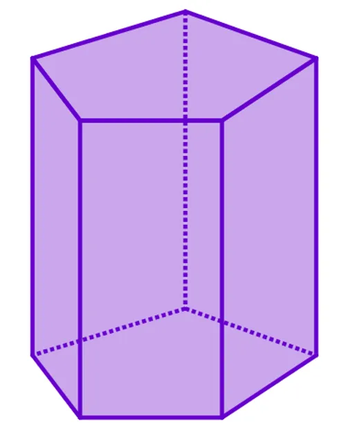
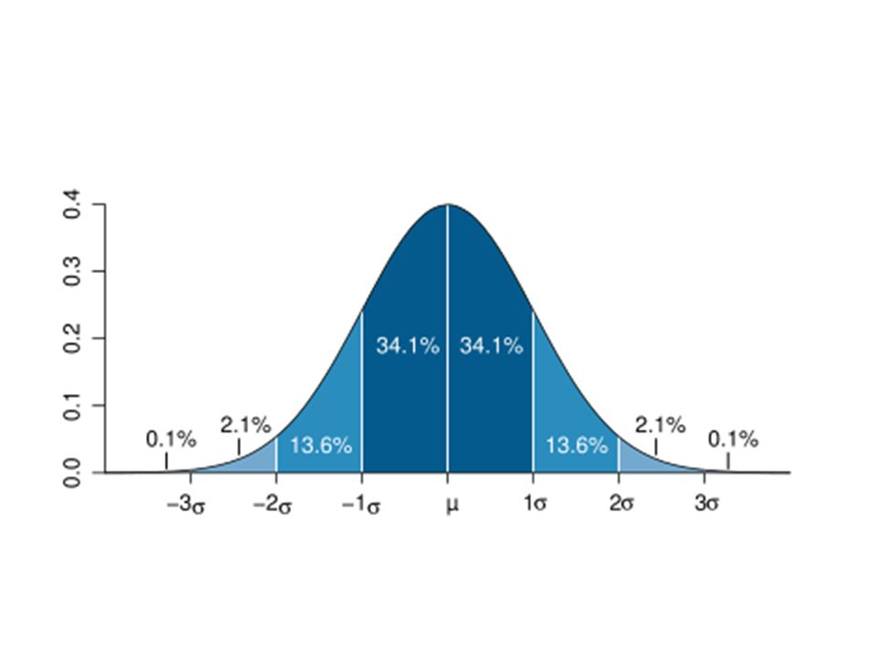
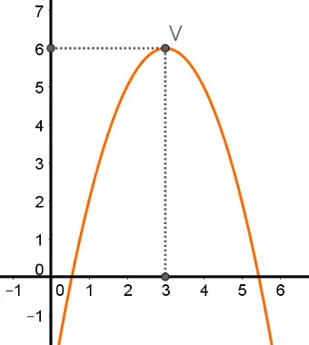

Matemática.
Esta é umas das áreas do conhecimento de que eu mais gosto, adoro como é desafiar fazer os calculos e as possibilidade que uma questão pode levar
ATIVIDADES FAVORITAS.
Volume de prismas regulares
Criamos um projeto do ano aonde colocamos em exposição nossas artes com varios temas brasileiros, como por exemplo o flocore brasileiro
Medidas de Variabilidade
Criamos um boné que caso chegamos perto de uma parede ou um objeto chegasse perto da gente, iria acionar um dispositivo que ficaria apitando dizendo se o objeto/parede esta proximo ou não
Aplicação de ponto maximo
Criamos um sistema onde ele detecta se esta chovendo para fechar o talhado para caso tenha alguma roupa no varal não fique molhada


